Sesión 05 — Codificación de Canal: LDPC y Códigos Polar
Objetivos de Aprendizaje
Al finalizar esta sesión, el estudiante será capaz de:
- Calcular la capacidad de Shannon de un canal AWGN y determinar el Eb/N0 mínimo teórico para comunicación fiable
- Explicar el concepto de ganancia de codificación y calcularla a partir de curvas de BER
- Describir la estructura del grafo de Tanner de un código LDPC y el principio del algoritmo de belief propagation
- Derivar las transformaciones de polarización del canal que dan lugar a los códigos Polar
- Identificar qué código (LDPC o Polar) usa 5G NR en cada canal físico y por qué
Introducción
En la Sesión 03, el Ejercicio 6 calculó que un sistema OFDM operaba al 86% de la capacidad de Shannon en condiciones realistas. En la Sesión 02, el selector de MCS usó un umbral de BER pre-FEC de \(10^{-1}\) — una BER que un detector sin código nunca aceptaría — dando por sentado que el código LDPC de 5G NR la transformaba en \(<10^{-5}\). Ambas sesiones usaron la codificación de canal como una "caja negra" con propiedades mágicas. Esta sesión abre esa caja.
La pregunta central es: si un canal introduce errores inevitablemente, ¿cómo es posible comunicar sin errores? La respuesta, contra toda intuición, es: añadiendo más bits. Específicamente, añadiendo bits de redundancia cuidadosamente diseñados para que el receptor pueda detectar y corregir los errores del canal. Shannon (1948) demostró que esto es posible para cualquier tasa \(R < C\), donde \(C\) es la capacidad del canal. Durante casi 50 años nadie supo construir códigos que se acercaran al límite; los turbo codes (1993) y los LDPC codes (redescubiertos 1996) rompieron esa barrera. Los códigos Polar (Arıkan 2009) son los primeros en ser teóricamente demostrables como capacity-achieving.
Teoría
1. El Límite de Shannon
La Sesión 03 usó la capacidad de Shannon como referencia de throughput. El resultado central es el Teorema de Shannon-Hartley:
donde \(B\) es el ancho de banda [Hz] y SNR es la relación señal a ruido lineal en el receptor. Este límite establece dos hechos complementarios: la mitad positiva — para cualquier tasa \(R < C\) existe un código de longitud \(n\) suficientemente grande tal que la probabilidad de error es arbitrariamente pequeña — y la mitad negativa o "converso" — para cualquier \(R > C\), la probabilidad de error se acerca a 1 sin importar qué código se use.
El límite de Eb/N0. ¿Cuál es el SNR mínimo absoluto para comunicar fiablemente? Si la tasa espectral es \(\eta = R/B\) [bit/s/Hz], la condición \(R < C\) exige:
Expresando SNR en términos de Eb/N0: \(\text{SNR} = (E_b/N_0)\cdot(R/B) = (E_b/N_0)\cdot\eta\). Sustituyendo:
A medida que \(\eta \to 0\) (tasa de bits muy baja): \(\lim_{\eta\to0}\frac{2^\eta-1}{\eta} = \ln 2 \approx 0{,}693\).
El límite absoluto de Shannon es \(E_b/N_0 \geq \ln 2 = -1{,}59\ \text{dB}\). Por debajo de este valor no existe ningún código capaz de comunicar fiablemente, para ninguna tasa y ningún esquema de modulación.
La figura siguiente sitúa los MCS codificados de la Sesión 02 sobre la frontera de Shannon. Las flechas muestran la brecha de codificación: cuántos dB de \(E_b/N_0\) separan cada sistema del límite teórico a la misma eficiencia espectral.
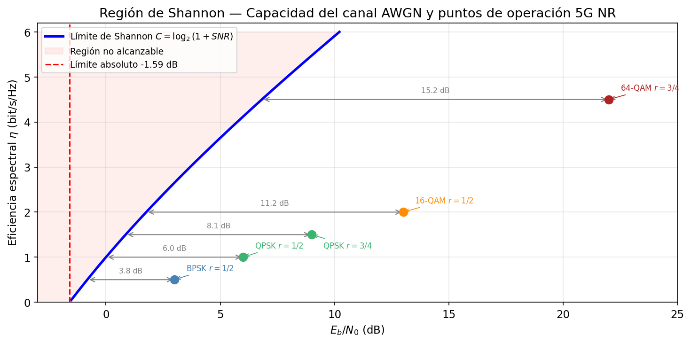
La pregunta natural es: el límite \(E_b/N_0 \geq \ln 2 = -1{,}59\ \text{dB}\) marca la frontera absoluta de lo posible, pero los sistemas reales operan varios dB por encima de ella. ¿Cómo se construye un código que se acerque a esa frontera sin cruzarla? La respuesta es la redundancia estructurada: añadir bits de paridad diseñados para que el receptor detecte y corrija los errores del canal, reduciendo el Eb/N0 necesario mediante ganancia de codificación.
2. Codificación de Canal: Redundancia Estructurada
La intuición es que la redundancia permite corrección de errores: si se envían 3 copias de cada bit y el receptor vota por mayoría, puede corregir hasta 1 error de 3. Pero esta repetición simple es ineficiente en espectro — la tasa cae a 1/3. Los códigos modernos logran la misma corrección con mucho menos overhead.
Códigos de bloque lineales. Un código \((n, k)\) mapea \(k\) bits de información en \(n\) bits de codeword. La tasa del código es \(r_c = k/n\). El conjunto de codewords válidos forman un subespacio lineal de \(\mathbb{F}_2^n\) — el espacio vectorial binario de dimensión \(n\).
La estructura se define mediante la matriz de verificación de paridad \(\mathbf{H}\) de dimensiones \((n-k)\times n\): un vector \(\mathbf{c}\) es una codeword válida si y sólo si:
La distancia mínima \(d_{\min}\) del código es el número mínimo de bits en que difieren dos codewords distintas. Un código de distancia mínima \(d_{\min}\) puede corregir hasta \(t = \lfloor(d_{\min}-1)/2\rfloor\) errores.
El trade-off de la codificación. Con un código de tasa \(r_c < 1\), para transmitir \(k\) bits de información el codificador produce \(n = k/r_c\) bits de canal. La energía total del bloque es \(k \cdot E_b\) — la comprometida por los \(k\) bits de información. Los \(n - k\) bits de paridad no aportan energía adicional: son redundancia, no nueva información transmitida. Al repartir esa energía fija entre los \(n\) bits de canal:
Cada bit de canal recibe solo una fracción \(r_c\) de la energía por bit de información. Esto introduce una penalización por tasa de \(10\log_{10}(1/r_c)\) dB. Para que el código sea beneficioso, la ganancia en distancia mínima debe superar esa penalización — esta es la condición necesaria para que exista ganancia de codificación neta.
La ganancia de codificación es la reducción neta de Eb/N0 (en dB) necesaria para alcanzar una BER objetivo:
Para LDPC con \(r_c = 1/2\) operando a BER \(= 10^{-5}\) sobre AWGN: \(G_c \approx 8\ \text{dB}\) — se necesita 8 dB menos de SNR que con BPSK sin código para la misma fiabilidad.
La pregunta natural es: \(G_c \approx 8\ \text{dB}\) es una mejora sustancial, pero ¿qué estructura interna tiene el código que lo hace posible? Añadir bits de redundancia arbitrarios no es suficiente — la ganancia de codificación depende de cómo se diseñan las relaciones de paridad entre bits. ¿Qué arquitectura matemática permite al decodificador explotar esas relaciones de forma eficiente? La respuesta es el grafo de Tanner disperso de los códigos LDPC, donde cada ecuación de paridad conecta solo un subconjunto pequeño de bits y el decodificador puede propagar correcciones de forma iterativa.
3. Códigos LDPC: Grafos Dispersos e Iteración
Los códigos LDPC (Low-Density Parity-Check) fueron propuestos por Gallager (1962) y redescubiertos por MacKay (1996). Su nombre describe la propiedad clave: la matriz de verificación de paridad \(\mathbf{H}\) es dispersa — tiene muy pocos unos respecto al total de entradas.
3.1 El Grafo de Tanner
La representación más intuitiva de un LDPC es su grafo de Tanner: un grafo bipartito con dos tipos de nodos:
- Nodos de variable (\(n\) nodos, uno por cada bit del codeword): representan los \(n\) bits transmitidos.
- Nodos de verificación (\(n-k\) nodos, uno por cada ecuación de paridad): representan las \(n-k\) ecuaciones \(\mathbf{H}\,\mathbf{c} = \mathbf{0}\).
Para el código LDPC \((8,4)\) del laboratorio, la matriz \(\mathbf{H}\) de dimensiones \(4\times 8\) es:
Cada fila es una ecuación de paridad: la suma XOR de los bits en las columnas donde hay un 1 debe ser cero. Las cuatro restricciones que todo codeword válido debe satisfacer son:
| Check node | Ecuación de paridad |
|---|---|
| \(c_0\) | \(v_0 \oplus v_1 \oplus v_2 \oplus v_3 = 0\) |
| \(c_1\) | \(v_1 \oplus v_2 \oplus v_4 \oplus v_5 = 0\) |
| \(c_2\) | \(v_2 \oplus v_3 \oplus v_5 \oplus v_6 = 0\) |
| \(c_3\) | \(v_0 \oplus v_3 \oplus v_6 \oplus v_7 = 0\) |
Hay una arista entre \(v_j\) y \(c_i\) si y sólo si \(H_{ij} = 1\) — cuando el bit \(j\) participa en la ecuación de paridad \(i\). La Figura 2 muestra ese grafo para este código.
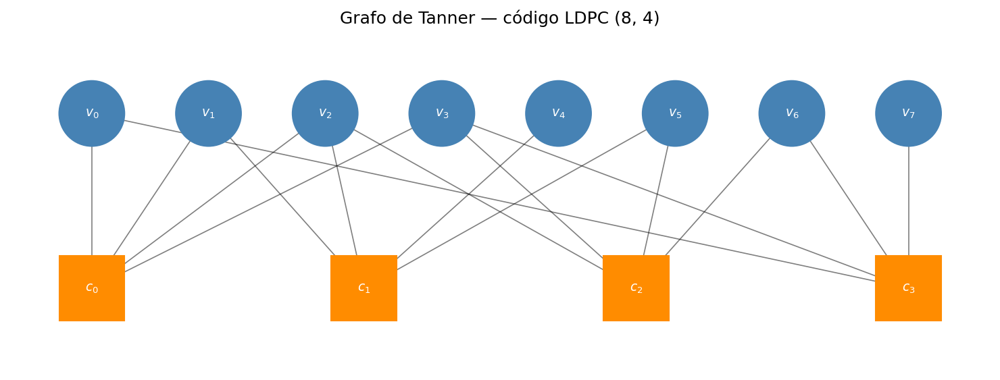
La dispersidad del grafo es la razón por la que el decodificador iterativo converge eficientemente. En grafos dispersos, los ciclos son largos — esto minimiza las correlaciones entre mensajes en iteraciones sucesivas.
La entrada al decodificador: valores LLR. Tras la demodulación, el receptor no entrega bits duros (0 o 1) al decodificador — entrega una medida de confianza por cada bit del codeword, el log-likelihood ratio:
Un LLR grande y positivo indica que el bit es casi seguramente 0; grande y negativo, casi seguramente 1; cercano a cero, alta incertidumbre. El canal AWGN puede invertir el signo del LLR de algún bit — ese es el "error" que el decodificador debe corregir.
El objetivo de la decodificación. El decodificador BP parte de esos LLRs de canal y los ajusta iterativamente usando las ecuaciones de paridad como restricciones: los check nodes detectan qué bits violan sus ecuaciones y retroalimentan esa información a sus variable nodes vecinos para corregir sus LLRs. El proceso termina cuando los bits decodificados satisfacen simultáneamente las \(n-k\) ecuaciones:
El cómo se calculan esos mensajes entre nodos es el algoritmo de belief propagation, que se detalla a continuación.
La pregunta natural es: el grafo de Tanner disperso con ciclos largos es la estructura que hace posible la decodificación iterativa, pero ¿cómo explota concretamente esa estructura un decodificador para propagar correcciones de bit en bit? ¿Qué mensajes se intercambian entre nodos de variable y nodos de verificación, y cómo convergen hacia la codeword correcta? La respuesta es el algoritmo de belief propagation, que circula log-likelihood ratios por las aristas del grafo en iteraciones sucesivas hasta que todas las ecuaciones de paridad se satisfacen.
3.2 Belief Propagation (Propagación de Creencias)
El algoritmo de decodificación de LDPC es belief propagation (BP), también llamado sum-product algorithm o message passing. La idea es que cada nodo transmite a sus vecinos un mensaje que representa su "creencia" sobre los bits desconocidos, basándose en toda la información que ha recibido de sus otros vecinos.
Los mensajes se representan como log-likelihood ratios (LLRs): \(\lambda = \log(P(\text{bit}=0)/P(\text{bit}=1))\). Un LLR positivo indica que el bit es probablemente 0; negativo, que probablemente 1.
Inicialización. El canal proporciona el LLR de observación para cada bit: \(\lambda_v^{(0)} = \log\frac{P(y|c_v=0)}{P(y|c_v=1)}\). Para AWGN con varianza \(\sigma^2\): \(\lambda_v^{(0)} = 2y/\sigma^2\).
Iteración. En cada iteración:
Paso 1 (variable → verificación). Cada nodo de variable \(v\) envía a cada nodo de verificación \(c\) la suma de todos los mensajes entrantes excepto el de \(c\):
Paso 2 (verificación → variable). Cada nodo de verificación \(c\) envía a cada nodo de variable \(v\) la "verificación de consistencia" de todos los demás mensajes entrantes:
Este mensaje puede interpretarse como: "dado todo lo que sé de mis otros vecinos, ¿qué debería ser el bit \(v\) para que la paridad se cumpla?"
Paso 3 (decisión). La creencia actualizada de cada nodo de variable es:
La decisión es \(\hat{c}_v = 0\) si \(\lambda_v^{(\text{total})} > 0\), y \(1\) en caso contrario.
Ejemplo numérico: una iteración completa con LDPC (8,4)
Escenario. Se transmite el codeword de todos ceros sobre BPSK (bit 0 → señal +1, bit 1 → señal −1) a través de un canal AWGN con \(\sigma^2 = 1\). El receptor observa señales con ruido y calcula los LLRs de canal con \(\lambda_v^{(0)} = 2y\):
| Bit | Señal recibida \(y\) | \(\lambda^{(0)} = 2y\) | Canal dice |
|---|---|---|---|
| \(v_0\) | +0.7 | +1.4 | probablemente 0 ✓ |
| \(v_1\) | +1.2 | +2.4 | probablemente 0 ✓ |
| \(v_2\) | −0.3 | −0.6 | probablemente 1 ✗ ← error |
| \(v_3\) | +0.8 | +1.6 | probablemente 0 ✓ |
| \(v_4\) | +1.5 | +3.0 | probablemente 0 ✓ |
| \(v_5\) | +0.4 | +0.8 | probablemente 0 ✓ |
| \(v_6\) | +1.1 | +2.2 | probablemente 0 ✓ |
| \(v_7\) | +0.9 | +1.8 | probablemente 0 ✓ |
\(v_2\) llegó negativo por ruido: sin FEC sería un bit erróneo. BP debe corregirlo.
Vecinos de \(v_2\) en el grafo de Tanner. La columna 2 de \(\mathbf{H}\) indica qué check nodes verifican \(v_2\) (filas con \(H_{i,2}=1\)):
Las filas 0, 1 y 2 tienen un 1 en la columna de \(v_2\), por eso \(v_2\) tiene aristas con \(c_0\), \(c_1\) y \(c_2\) — y no con \(c_3\).
Paso 1 (v→c) — fórmula: \(\mu_{v \to c} = \lambda_v^{(0)} + \sum_{c' \neq c} \mu_{c' \to v}\)
En la primera iteración no hay mensajes previos de los check nodes (\(\mu_{c' \to v} = 0\)), así que la fórmula se reduce a \(\mu_{v \to c} = \lambda_v^{(0)}\). Cada variable reenvía simplemente su LLR de canal:
| Variable | Envía a | Mensaje \(\mu_{v \to c}\) |
|---|---|---|
| \(v_2\) | \(c_0\) | \(-0.6\) |
| \(v_2\) | \(c_1\) | \(-0.6\) |
| \(v_2\) | \(c_2\) | \(-0.6\) |
(Todos los demás bits envían igualmente sus LLRs iniciales a sus respectivos vecinos check.)
Paso 2 (c→v) — fórmula: \(\mu_{c \to v} = 2\,\text{arctanh}\!\left(\prod_{v' \neq v} \tanh\!\left(\frac{\mu_{v' \to c}}{2}\right)\right)\)
\(c_0\) verifica \(\{v_0, v_1, v_2, v_3\}\) (fila 0 de \(\mathbf{H}\)). Recibió \(\mu_{v_0\to c_0}{=}{+1.4}\), \(\mu_{v_1\to c_0}{=}{+2.4}\), \(\mu_{v_2\to c_0}{=}{-0.6}\), \(\mu_{v_3\to c_0}{=}{+1.6}\). Para enviar a \(v_2\), excluye \(v_2\) y multiplica los tanh de los demás:
El signo positivo significa: "\(v_0\), \(v_1\) y \(v_3\) creen que son 0; para que \(v_0 \oplus v_1 \oplus v_2 \oplus v_3 = 0\), tú también debes ser 0."
De forma análoga \(c_1\) (fila 1, verifica \(\{v_1,v_2,v_4,v_5\}\)) y \(c_2\) (fila 2, verifica \(\{v_2,v_3,v_5,v_6\}\)) envían:
Paso 3 (decisión) — fórmula: \(\lambda_v^{(\text{total})} = \lambda_v^{(0)} + \sum_c \mu_{c \to v}\)
El LLR pasó de \(-0.6\) (canal: "probablemente 1") a \(+1.095\) (BP: "probablemente 0") — error corregido en una sola iteración.
Resultado final tras 1 iteración (todos los bits):
| Bit | \(\lambda\) canal | \(\lambda\) final | Decisión | |
|---|---|---|---|---|
| \(v_0\) | +1.4 | +1.877 | 0 | ✓ |
| \(v_1\) | +2.4 | +1.964 | 0 | ✓ |
| \(v_2\) | −0.6 | +1.095 | 0 | ✓ corregido |
| \(v_3\) | +1.6 | +1.850 | 0 | ✓ |
| \(v_4\) | +3.0 | +2.815 | 0 | ✓ |
| \(v_5\) | +0.8 | +0.041 | 0 | ✓ |
| \(v_6\) | +2.2 | +2.644 | 0 | ✓ |
| \(v_7\) | +1.8 | +2.466 | 0 | ✓ |
\(v_5\) quedó con \(\lambda = +0.041\) — casi en el umbral. Con más ruido o más bits erróneos simultáneos, haría falta una segunda iteración para consolidarlo.
El algoritmo itera hasta que \(\mathbf{H}\,\hat{\mathbf{c}} = \mathbf{0}\) (codeword válida) o hasta un número máximo de iteraciones (típicamente 50–100). El comportamiento en la práctica muestra una curva en cascada (waterfall): por encima del umbral de SNR, el BP converge en pocas iteraciones; por debajo, no converge y la BER cae precipitosamente.
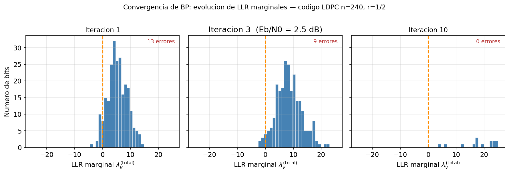
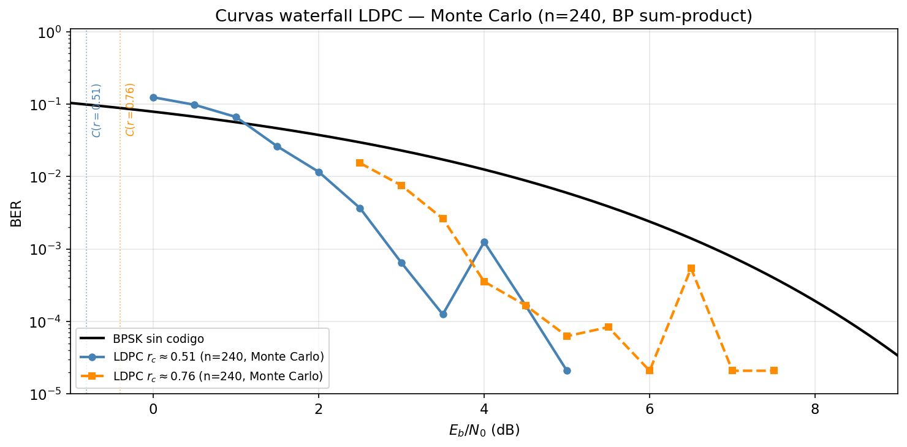
La pregunta natural es: la decisión \(\hat{c}_v\) y la curva waterfall describen el comportamiento ideal sobre un grafo pequeño, pero 5G NR transmite bloques de datos de miles de bits — los grafos correspondientes tendrían millones de aristas y serían inviables de almacenar y procesar directamente. ¿Cómo escala el algoritmo BP a esas dimensiones manteniendo el mismo hardware de decodificador? La respuesta es la estructura de grafo base con lifting: un grafo compacto que se expande mediante permutaciones cíclicas para generar matrices \(\mathbf{H}\) de cualquier longitud con un único diseño de hardware.
3.3 LDPC en 5G NR
5G NR usa dos familias de grafos base LDPC (base graphs, BG):
- BG1: grafo base de 46×68, bloque máximo de información de \(k = 8448\) bits. Optimizado para bloques de datos grandes (\(k > 3840\) bits) y tasas altas (\(r_c \geq 1/3\)). Se usa en PDSCH y PUSCH para la mayoría de las transmisiones de datos.
- BG2: grafo base de 42×52, bloque máximo de \(k = 3840\) bits. Optimizado para bloques pequeños y tasas bajas (\(r_c \geq 1/5\)). Para control de datos y retransmisiones HARQ.
Canales físicos de 5G NR mencionados
- PDSCH (Physical Downlink Shared Channel): canal de datos en downlink — lleva tráfico IP desde la red hacia el UE. Usa BG1 para la mayoría de las transmisiones.
- PUSCH (Physical Uplink Shared Channel): canal de datos en uplink — lleva tráfico desde el UE hacia la red. También usa BG1 en condiciones normales.
- HARQ (Hybrid Automatic Repeat reQuest): mecanismo de retransmisión que combina FEC con solicitud de reenvío. Si el decodificador falla, el UE pide una retransmisión; el receptor combina ambas recepciones para mejorar la probabilidad de éxito. Los bloques HARQ son típicamente más cortos, de ahí el uso de BG2.
Lifting: un grafo base, cientos de longitudes. El grafo base (por ejemplo BG1 de 46×68) es un diseño compacto de referencia. El lifting con factor \(Z\) lo expande: cada nodo del grafo base se convierte en \(Z\) nodos, y cada arista en una permutación cíclica entre grupos de \(Z\) nodos. La matriz \(\mathbf{H}\) resultante tiene dimensiones \((46 \times Z) \times (68 \times Z)\), produciendo codewords de longitud \(n = 68Z\). En 5G NR, \(Z\) puede tomar valores de 2 a 384, cubriendo codewords de hasta \(68 \times 384 = 26\,112\) bits — todos decodificables con el mismo hardware diseñado para el grafo base.
La pregunta natural es: los grafos base BG1 y BG2 se encontraron mediante búsqueda empírica — se simularon miles de grafos candidatos y se eligieron los que producían el mejor umbral waterfall. Funcionan muy bien en práctica, pero no existe demostración matemática de que alcancen la capacidad de Shannon. ¿Existe una familia de códigos que alcance la capacidad del canal con una prueba formal, sin búsqueda aleatoria de grafos? La respuesta es la familia de códigos Polar: Arıkan (2009) demostró matemáticamente que alcanzan exactamente la capacidad de Shannon en el límite \(N \to \infty\), mediante transformaciones deterministas — los primeros códigos en la historia con esa garantía teórica.
4. Códigos Polar: Polarización del Canal
Los códigos Polar fueron propuestos por Arıkan (2009) y son los primeros códigos demostrablemente capacity-achieving para canales binarios simétricos — no se aproximan al límite, sino que lo alcanzan asintóticamente con decodificación de cancelación sucesiva.
4.1 Polarización del Canal
La idea central de Arıkan: mezclar dos copias del canal físico crea un canal "mejor" y uno "peor". Repetir esta operación \(m\) veces produce \(N = 2^m\) canales cada vez más polarizados hacia los extremos. El diseñador asigna bits de información a los mejores y deja los peores vacíos — alcanzando la capacidad de Shannon.
El canal físico \(W\). \(W\) modela cómo el canal transforma cada bit transmitido en señal recibida. Para AWGN-BPSK: envías \(x \in \{+1,-1\}\) y recibes \(y = x + n\) con \(n \sim \mathcal{N}(0,\sigma^2)\); en general, \(W(y\mid x)\) es la probabilidad de observar \(y\) dado \(x\). La capacidad \(C(W)\) es el máximo de bits fiables por uso — fijada por la física del enlace, no por el diseñador.
Copias independientes de \(W\). Transmitir dos bits consecutivos usa el canal dos veces con ruidos independientes: conocer \(y_0\) no dice nada sobre \(n_1\). Formalmente, la probabilidad conjunta factoriza:
Sin términos cruzados: eso es lo que significa canal sin memoria. Esas dos transmisiones independientes son la materia prima de la polarización.
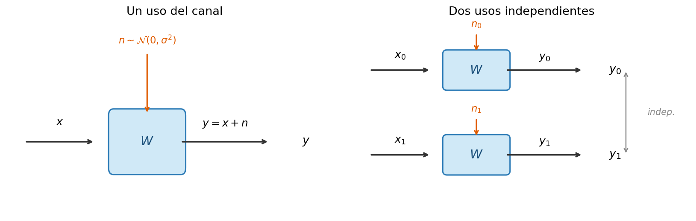
Canales sintéticos \(W_2^{(-)}\) y \(W_2^{(+)}\). En lugar de transmitir \((u_0,u_1)\) directamente, Arıkan los mezcla primero con la transformación butterfly primitiva \(G_2\):
Esa mezcla crea dos sub-problemas de decodificación distintos sobre las mismas observaciones físicas \((y_0, y_1)\):
- \(W_2^{(-)}\) (canal malo): estimar \(u_0\) desde \((y_0,y_1)\) sin información adicional. El receptor ve ruido mezclado, sin saber \(u_1\). Resultado: canal peor que \(W\).
- \(W_2^{(+)}\) (canal bueno): estimar \(u_1\) desde \((y_0,y_1)\) y \(u_0\) ya conocido. Conocer \(u_0\) permite cancelar su efecto de \(y_0\), reduciendo drásticamente la ambigüedad. Resultado: canal mejor que \(W\).
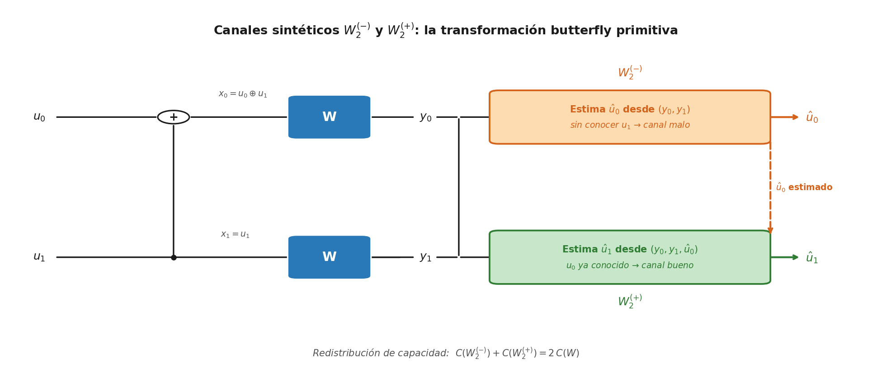
Un canal sintético no es un canal físico — es una abstracción que describe la dificultad de un sub-problema de decodificación. La diferencia entre \(W_2^{(+)}\) y \(W_2^{(-)}\) no está en las transmisiones físicas (ambos usan las mismas \(y_0,y_1\)), sino en qué información tiene el receptor al decidir. Esta primitiva \(N=2\) se anida \(m\) veces para producir \(N = 2^m\) canales sintéticos con calidades cada vez más extremas.
La Figura 7 muestra cómo la primitiva se aplica recursivamente \(m = \log_2 N\) veces. Cada columna de nodos XOR es una etapa butterfly: la etapa 1 combina pares adyacentes, la etapa 2 combina bloques de 4, y así sucesivamente. Con \(N=8\) hay 3 etapas.
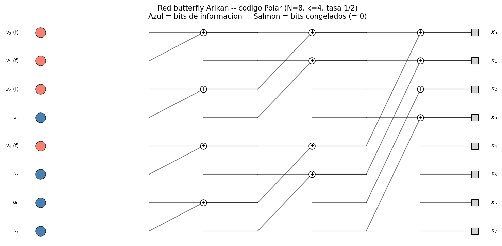
La polarización separa los \(N\) canales sintéticos en dos grupos a medida que \(N\) crece: los mejores se vuelven casi perfectos, los peores casi inútiles. La Figura 7 ya muestra el resultado para \(N=8\), \(k=4\): los cuatro nodos azules son los canales buenos asignados a bits de información; los cuatro salmón son los malos, congelados en cero.
El encoder como transformación N→N. La red butterfly es una transformación cuadrada: recibe exactamente \(N\) bits de entrada y produce exactamente \(N\) bits de codeword. De esos \(N\) bits de entrada, \(k\) son bits de información (los que el transmisor quiere comunicar) y \(N-k\) son bits congelados, fijados a 0 por diseño. El transmisor construye el vector completo \(\mathbf{u}\) colocando sus \(k\) bits en las posiciones "buenas" y un cero en cada posición "mala"; ese \(\mathbf{u}\) — completamente conocido — entra al butterfly. La tasa del código es \(r_c = k/N\).
Calidad del canal sintético: el parámetro \(Z\). Para comparar los \(N\) canales sintéticos entre sí se necesita una métrica de calidad. El parámetro de Bhattacharyya \(Z(W_N^{(i)}) \in [0,\,1]\) es esa métrica: mide cuánto se solapan las distribuciones condicionales de \(y\) bajo las dos hipótesis posibles (\(u_i = 0\) frente a \(u_i = 1\)). Si \(Z \approx 0\), las dos distribuciones son casi disjuntas — el canal sintético es casi perfecto, el decoder difícilmente se equivoca. Si \(Z \approx 1\), las distribuciones son casi idénticas — el canal sintético es casi inútil, la información de \(u_i\) queda enterrada en ruido. La polarización hace exactamente esto: convierte los valores intermedios de \(Z\) del canal físico en extremos — unos pocos \(Z \approx 0\) y el resto \(Z \approx 1\) — a medida que \(N\) crece.
Selección de posiciones. La elección de qué posiciones son buenas y cuáles son malas se hace fuera de línea, como parte del diseño del código. Los \(N\) canales sintéticos se ordenan por calidad — del mejor al peor — y se asignan:
- Las \(k\) posiciones con \(Z\) más bajo → bits de información (canales buenos)
- Las \(N-k\) posiciones con \(Z\) más alto → bits congelados = 0 (canales malos)
Tanto el encoder como el decoder conocen de antemano cuáles posiciones son información y cuáles están congeladas — es información pública del código, no se transmite por el canal.
Ejemplo: encoding butterfly N=4 paso a paso
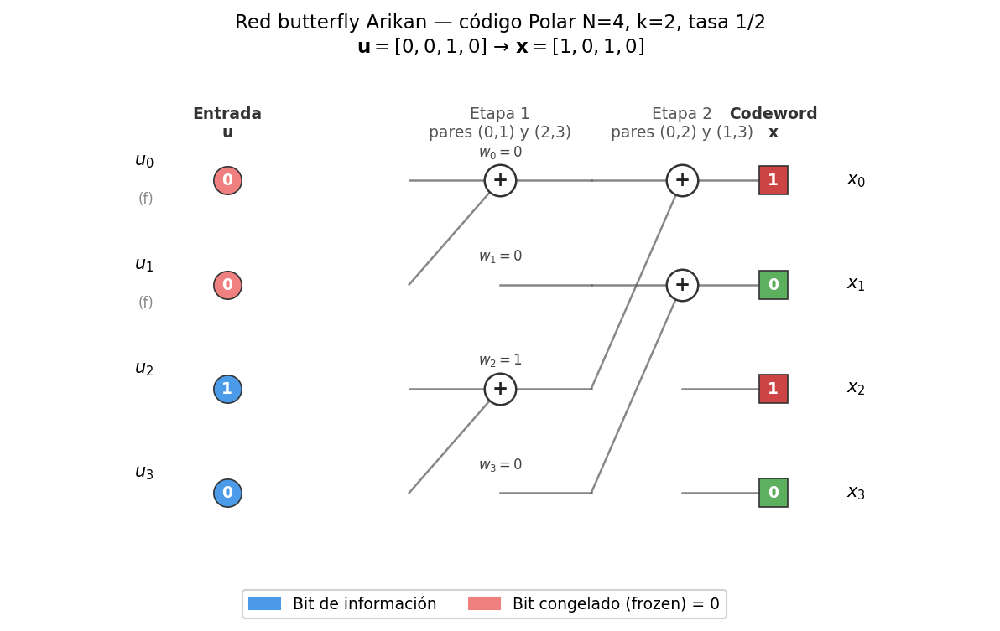
Escenario. Código Polar \(N=4\), tasa \(r_c=1/2\). Los bits congelados son \(\{u_0, u_1\}\) (fijados a 0) y los bits de información son \(\{u_2, u_3\}\). Tomamos el vector de entrada:
Etapa 1 — combinar pares adyacentes (índices 0,1) y (2,3):
\(w_0 = u_0 \oplus u_1 = 0 \oplus 0 = 0\)
\(w_1 = u_1 = 0\)
\(w_2 = u_2 \oplus u_3 = 1 \oplus 0 = 1\)
\(w_3 = u_3 = 0\)
Valores intermedios: \(\mathbf{w} = [0, 0, 1, 0]\)
Etapa 2 — combinar pares intercalados (índices 0,2) y (1,3):
\(x_0 = w_0 \oplus w_2 = 0 \oplus 1 = 1\)
\(x_1 = w_1 \oplus w_3 = 0 \oplus 0 = 0\)
\(x_2 = w_2 = 1\)
\(x_3 = w_3 = 0\)
Codeword resultante: x = [1, 0, 1, 0]
¿Por qué \(u_0\) es el canal sintético más débil?
| Bit | Aparece en | Señales que lo transportan |
|---|---|---|
| \(u_0\) | \(x_0\) | 1 |
| \(u_1\) | \(x_0, x_1\) | 2 |
| \(u_2\) | \(x_0, x_2\) | 2 |
| \(u_3\) | \(x_0, x_1, x_2, x_3\) | 4 |
\(u_3\) se distribuye por las 4 posiciones del codeword: el receptor dispone de cuatro observaciones ruidosas independientes para recuperarlo, más la información de cancelación de \(\hat{u}_0\), \(\hat{u}_1\), \(\hat{u}_2\) ya decodificados. \(u_0\), en cambio, solo llega a \(x_0\) y el decodificador SC lo decodifica primero, sin ninguna información de cancelación. Eso es exactamente lo que mide el parámetro de Bhattacharyya \(Z(W)\): la dificultad de recuperar un bit sin contexto adicional.
Con el encoder y el mapa de posiciones definidos, la imagen del lado transmisor queda completa. La pregunta que cierra la teoría: ¿cuántas posiciones buenas produce la polarización cuando \(N\) es grande — es decir, cuántos bits de información puede cargar el código? El teorema de Arıkan lo garantiza:
El teorema dice: a medida que \(N\) crece, la fracción de canales sintéticos con \(Z \approx 0\) (casi perfectos) converge exactamente a \(C(W)\) — la capacidad de Shannon del canal físico original. La fracción restante, \(1 - C(W)\), colapsa hacia \(Z \approx 1\) (casi inútiles). No hay término medio: la polarización empuja todos los canales hacia uno de los dos extremos.
¿Qué significa esto en la práctica? Supón un canal AWGN con \(C(W) = 0{,}7\) bits/uso. Con \(N = 1024\) canales sintéticos, aproximadamente \(0{,}7 \times 1024 \approx 717\) de ellos tendrán \(Z \approx 0\) — son los buenos. Si colocas un bit de información en cada uno de esos 717 canales y congelas los 307 restantes, tu código transmite 717 bits útiles en un bloque de 1024 bits de codeword. Tasa resultante: \(r_c = 717/1024 \approx 0{,}7 = C(W)\).
La polarización no crea capacidad de la nada — la concentra. El canal físico siempre tuvo \(C(W) = 0{,}7\); la red butterfly redistribuye esa capacidad en unos pocos canales casi perfectos y descarta los demás. El resultado es que puedes usar esos canales buenos como si fueran ideales, alcanzando la tasa máxima teórica. Los códigos Polar no se aproximan al límite de Shannon — lo alcanzan.
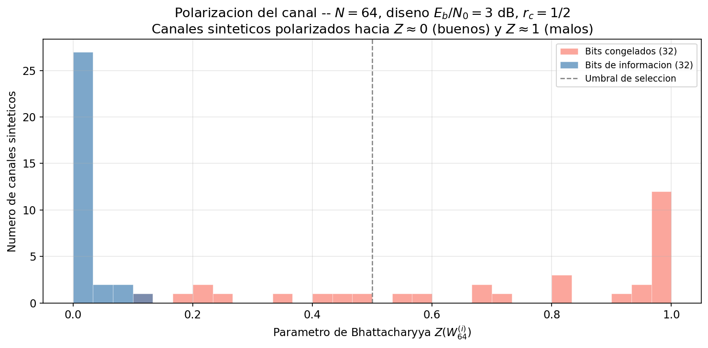
La pregunta natural es: el parámetro de Bhattacharyya \(Z(W_N^{(i)})\) identifica cuáles canales sintéticos son fiables, pero el decodificador debe extraer los bits de información de esos canales sin conocer aún los bits que siguen — cada decisión afecta a todas las posteriores. ¿Cómo resuelve el decodificador esa dependencia causal de forma eficiente? La respuesta es la cancelación sucesiva: decodificar los bits en orden estricto \(u_1, u_2, \ldots, u_N\), usando cada decisión anterior como condición conocida para calcular el LLR del siguiente.
4.2 Decodificación por Cancelación Sucesiva
El decodificador SC (Successive Cancellation) decodifica los bits de entrada \(u_0, u_1, \ldots, u_{N-1}\) en orden estricto:
- Si \(u_i\) es un bit congelado: \(\hat{u}_i = 0\) — no hay nada que calcular, el receptor ya conoce su valor.
- Si \(u_i\) es un bit de información: se calcula el LLR de \(u_i\) condicionado en los bits ya decodificados \(\hat{u}_0, \ldots, \hat{u}_{i-1}\), y se decide \(\hat{u}_i = 0\) si LLR \(> 0\), y \(1\) en caso contrario.
El cálculo de LLRs propaga mensajes hacia atrás por el grafo butterfly. En cada nodo hay dos roles: el bit sin contexto previo (primero del par) y el bit cuyo predecesor ya fue decidido (segundo del par). Cada rol tiene su operación:
La operación \(g\) es la "cancelación sucesiva": una vez que \(\hat{u}\) es conocido, deshace el XOR que el codificador aplicó y libera el LLR del siguiente bit con la información completa. La complejidad total es \(\mathcal{O}(N\log N)\) — la misma que la FFT.
La Figura 9 muestra las dos pasadas del decodificador SC para el ejemplo N=4. Pasada 1 (panel izquierdo, naranja): el decoder lee los cuatro LLRs de canal y los combina de a pares con \(f\) — obteniendo dos valores intermedios que resumen la información conjunta de \((L_0, L_2)\) y \((L_1, L_3)\) respectivamente. Desde esos dos intermedios, una segunda aplicación de \(f\) y \(g\) produce los LLRs para \(\hat{u}_0\) y \(\hat{u}_1\); como son bits congelados, la decisión es trivial: siempre 0. Pasada 2 (panel derecho, verde): con \(\hat{u}_0 = \hat{u}_1 = 0\) ya conocidos, el decoder regresa a los mismos LLRs de canal pero ahora aplica \(g\) en lugar de \(f\) — la operación \(g\) incorpora los bits ya decididos como cancelación, actualizando los intermedios. Los nuevos valores intermedios \((-4{,}4\) y \(+3{,}6)\) alimentan \(f\) y \(g\) para decidir \(\hat{u}_2 = 1\) y \(\hat{u}_3 = 0\): los bits de información, recuperados correctamente.
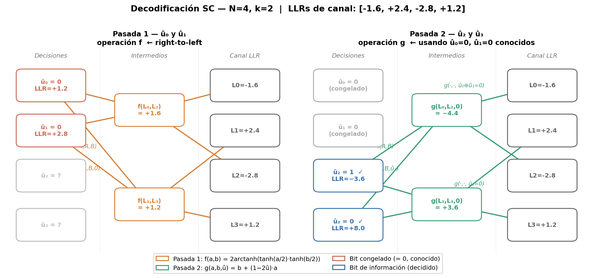
Ejemplo numérico: SC sobre Polar N=4, tasa 1/2
Código. Polar \(N=4\) con bits congelados en \(\{u_0, u_1\}\) (los dos canales sintéticos más débiles) y bits de información en \(\{u_2, u_3\}\).
Transmisión. Se envían bits de información \([u_2, u_3] = [1, 0]\). Con \([u_0, u_1] = [0, 0]\) fijos, el codificador aplica el butterfly de 2 etapas y produce la codeword \(\mathbf{x} = [1, 0, 1, 0]\). En BPSK (bit 0 → \(+1\), bit 1 → \(-1\)), la señal transmitida es \([-1, +1, -1, +1]\).
Recepción. El canal AWGN añade ruido; el receptor observa \(y = [-0{,}8,\; +1{,}2,\; -1{,}4,\; +0{,}6]\) y calcula los LLRs de canal:
| Posición | Señal \(y\) | LLR \(= 2y\) |
|---|---|---|
| 0 | \(-0{,}8\) | \(-1{,}6\) |
| 1 | \(+1{,}2\) | \(+2{,}4\) |
| 2 | \(-1{,}4\) | \(-2{,}8\) |
| 3 | \(+0{,}6\) | \(+1{,}2\) |
El decoder SC recorre el grafo butterfly de derecha a izquierda — al revés que el codificador. Para \(N=4\) con 2 etapas, el recorrido se organiza en cuatro pasos.
Etapa 1 — LLRs intermedios (deshacer Stage 2 hacia atrás)
El codificador combinó en Stage 2 los pares \((x_0, x_2)\) y \((x_1, x_3)\) mediante XOR. El decoder deshace esa mezcla aplicando \(f\) a esos mismos pares de LLRs de canal — con la aproximación min-sum \(f(a,b) \approx \text{signo}(a)\cdot\text{signo}(b)\cdot\min(|a|,|b|)\). El resultado son dos LLRs intermedios que capturan la información conjunta de cada par sin conocer aún qué bit ocupa cada posición:
Etapa 2 — Decodificar \(u_0\) y \(u_1\) (deshacer Stage 1 hacia atrás)
Con \(\ell_{02}\) y \(\ell_{13}\) disponibles, el decoder aplica Stage 1 al revés sobre el par \((u_0, u_1)\). La regla es siempre la misma: \(f\) para el primer bit del par (sin contexto previo), \(g\) para el segundo (usando el bit ya decidido):
Decisión \(u_0\) — ningún bit decidido aún; se aplica \(f\): $\(\text{LLR}(u_0) = f(\ell_{02},\,\ell_{13}) = f(+1{,}6,\;+1{,}2) \approx +1{,}2 \quad\longrightarrow\quad \hat{u}_0 = \mathbf{0} \text{ (congelado)}\)$
Decisión \(u_1\) — \(\hat{u}_0 = 0\) ya conocido; se aplica \(g\), que cancela la contribución de \(\hat{u}_0\): $\(\text{LLR}(u_1) = g(\ell_{02},\,\ell_{13},\,\hat{u}_0 = 0) = +1{,}2 + 1\cdot(+1{,}6) = +2{,}8 \quad\longrightarrow\quad \hat{u}_1 = \mathbf{0} \text{ (congelado)}\)$
Etapa 3 — Cancelar \((\hat{u}_0, \hat{u}_1)\) y calcular nuevos LLRs intermedios para \((u_2, u_3)\)
Con \(\hat{u}_0\) y \(\hat{u}_1\) decididos, el decoder vuelve un nivel y aplica \(g\) directamente sobre los LLRs de canal — usando los bits que Stage 1 produce para las posiciones \((0,2)\) y \((1,3)\) — para eliminar la contribución de la primera mitad:
Estos nuevos LLRs son más informativos que los originales: la incertidumbre sobre \(u_0\) y \(u_1\) queda eliminada y la información de cuatro posiciones de canal se concentra en dos valores.
Etapa 4 — Decodificar \(u_2\) y \(u_3\)
Con \(g_{02}\) y \(g_{13}\), se repite exactamente la misma lógica que en la Etapa 2 — \(f\) para el primero del par, \(g\) para el segundo:
Decisión \(u_2\) — ningún bit adicional conocido; se aplica \(f\): $\(\text{LLR}(u_2) = f(g_{02},\,g_{13}) = f(-4{,}4,\;+3{,}6) \approx -3{,}6 \quad\longrightarrow\quad \hat{u}_2 = \mathbf{1} \checkmark \text{ correcto}\)$
Decisión \(u_3\) — \(\hat{u}_2 = 1\) ya conocido; se aplica \(g\): $\(\text{LLR}(u_3) = g(g_{02},\,g_{13},\,\hat{u}_2 = 1) = +3{,}6 + (1-2)\cdot(-4{,}4) = +3{,}6 + 4{,}4 = +8{,}0 \quad\longrightarrow\quad \hat{u}_3 = \mathbf{0} \checkmark \text{ correcto}\)$
La cancelación sucesiva es visible en los LLRs finales: \(|\text{LLR}(u_2)| = 3{,}6\) y \(|\text{LLR}(u_3)| = 8{,}0\) son mucho más nítidos que los LLRs de canal originales (\(|\text{LLR}| \in \{1{,}2, 2{,}4, 1{,}6, 2{,}8\}\)). Cada decisión previa "ayuda" a las siguientes aportando información adicional mediante la operación \(g\).
La limitación del SC básico es la propagación de errores: si \(\hat{u}_i\) es incorrecto, todos los bits posteriores reciben información errónea de la operación \(g\), y el bloque completo puede fallar.
Decodificador de lista (SCL). Cada decisión binaria bifurca el árbol de posibilidades: el SC básico siempre toma el camino de mayor LLR (greedy), descartando la alternativa. El SCL mantiene \(L\) caminos activos en paralelo — conserva ambas ramas en cada bifurcación hasta que la lista supere \(L\) hipótesis, y elimina entonces la de menor métrica acumulada. Es exactamente un beam search sobre un árbol de decisión binario: con \(L=8\) se exploran hasta 256 trayectorias candidatas en lugar de 1, recuperando casi todo el rendimiento del decodificador ML sin necesidad de buscar exhaustivamente entre las \(2^K\) codewords posibles. El SCL con \(L=8\) y CRC exterior (CA-Polar, el esquema de 5G NR) da prestaciones cercanas a la decodificación ML.
La pregunta natural es: el CA-Polar con SCL \(L=8\) ofrece prestaciones próximas al óptimo, pero ¿en qué canales físicos concretos de 5G NR se despliega este esquema, y qué característica de esos canales hace que Polar sea preferible a LDPC — que ya existe en el estándar y funciona bien para datos? La respuesta es el conjunto de canales de control de bloques cortos (PBCH, PDCCH, PUCCH), donde la longitud limitada del bloque favorece la estructura sistemática de Polar frente a la búsqueda iterativa de BP.
4.3 Polar en 5G NR
5G NR usa códigos Polar en los canales de control:
| Canal | Descripción | Bloques | Tasa |
|---|---|---|---|
| PBCH | Broadcast Channel | 32 bits | fija |
| PDCCH | Downlink Control | 12–140 bits | 1/4–1 |
| PUCCH | Uplink Control | 1–11 bits | 1/3–1 |
La longitud máxima del bloque de información es 1706 bits. En todos los casos se usa el esquema CA-Polar con CRC de 6 o 24 bits para detectar errores de decodificación y guiar el SCL. La ventaja de Polar sobre LDPC en bloques cortos es su estructura sistemática y su desempeño garantizado por teoría.
La pregunta natural es: 1706 bits de bloque máximo para Polar frente a 8448 bits para LDPC BG1 marca una diferencia clara de escala, pero ¿cuáles son los criterios cuantitativos completos que determinan cuándo elegir uno u otro en un sistema real? ¿Hay un cruce de rendimiento medible entre ambas familias, o la elección depende solo del tipo de canal físico? La respuesta es la comparación directa de la §5, que tabula los criterios de complejidad, longitud de bloque, y capacidad-achieving para guiar la selección en un sistema como 5G NR.
5. Comparación LDPC vs Polar y Selección en 5G NR
La figura siguiente muestra las curvas de BER (waterfall) de los dos códigos frente a BPSK sin código.
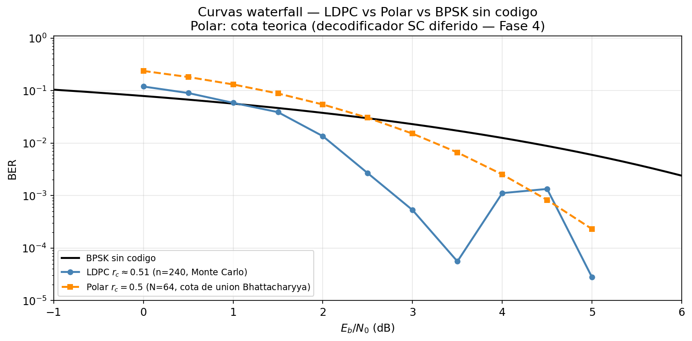
La elección entre LDPC y Polar en 5G NR sigue criterios de complejidad de implementación y longitud de bloque:
| Criterio | LDPC | Polar |
|---|---|---|
| Bloques grandes (>1000 bits) | ✓ mejor | — |
| Bloques pequeños (<1000 bits) | — | ✓ mejor |
| Tasa variable | ✓ puncturing/shortening | ✓ rate-matching |
| Complejidad decodificador | \(O(N_{\text{iter}}\cdot N)\) | \(O(L\cdot N\log N)\) |
| Capacidad-achieving | Asintóticamente | Demostrado |
| Uso en NR | PDSCH, PUSCH (datos) | PDCCH, PBCH (control) |
Ejemplo Numérico End-to-End
Un terminal 5G NR debe transmitir un bloque de transporte de \(k = 4000\) bits en el enlace descendente PDSCH usando LDPC BG1, \(r_c = 2/3\). El SNR recibido (Sesión 01) es 18 dB.
Paso 1 — Longitud del bloque codificado: \(n = k/r_c = 4000\times3/2 = 6000\) bits.
Paso 2 — Umbral LDPC BG1: para \(r_c = 2/3\) y longitud 6000, el umbral típico es Eb/N0 \(\approx 5\) dB (a BER pre-FEC \(\approx 10^{-1}\)). El SNR de 18 dB da un Eb/N0 efectivo por bit de canal:
Paso 3 — Ganancia de codificación: el umbral LDPC BG1 para \(r_c = 2/3\) es \(E_b/N_0 \approx 5{,}5\ \text{dB}\) a BER \(= 10^{-5}\); BPSK sin código necesita \(12{,}6\ \text{dB}\) a la misma BER. Ganancia de codificación neta: \(G_c = 12{,}6 - 5{,}5 \approx \mathbf{7{,}1\ \text{dB}}\). A \(E_b/N_0 = 12\ \text{dB}\) el sistema opera muy por encima del umbral de \(5{,}5\ \text{dB}\), por lo que la BER post-FEC \(\ll 10^{-10}\).
Paso 4 — Throughput: con \(r_c = 2/3\) y 64-QAM (6 bits/símbolo), la eficiencia espectral efectiva es \(6\times2/3 = 4\) bit/s/Hz (ver Sesión 02 tabla MCS). Para \(B = 40\) MHz: \(R \approx 160\) Mbit/s — coherente con el resultado de la Sesión 03 Sección 5.
La pregunta natural es: el ejemplo end-to-end muestra \(R \approx 160\) Mbit/s con una ganancia de codificación de \(\approx 7\ \text{dB}\) — un resultado analítico convincente, pero ¿cómo se verifica empíricamente que estos códigos realmente alcanzan esa ganancia sobre un canal simulado? ¿Cómo se construye y mide esa cadena en el laboratorio, y cuántas realizaciones de ruido son necesarias para trazar una curva waterfall confiable? La respuesta es la sección de laboratorio, que implementa exactamente esta cadena con simulación Monte Carlo y mide la BER bit a bit.
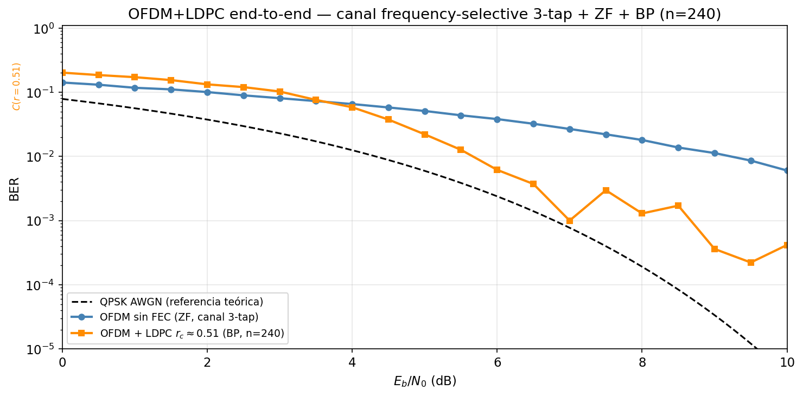
Síntesis
Dimensión 1: El límite de Shannon como frontera absoluta. La capacidad \(C = B\log_2(1+\text{SNR})\) define qué tasas son alcanzables. El límite de Eb/N0 = -1.59 dB es inalcanzable para ningún código. Implicación de diseño: la "brecha de Shannon" (gap to capacity) de un sistema mide cuánto más eficiente podría ser con mejor codificación.
Dimensión 2: Ganancia de codificación y penalización de tasa. Un código de tasa \(r_c\) introduce una penalización de \(10\log_{10}(1/r_c)\) dB pero ofrece una ganancia de distancia mínima mayor. La ganancia neta es positiva para buenos códigos, y crece logarítmicamente con la longitud del bloque \(n\). Implicación de diseño: bloques más largos → mayor ganancia de codificación → mejor acercamiento al límite de Shannon.
Dimensión 3: LDPC — esparsidad y propagación de creencias. La clave del éxito de LDPC es el grafo disperso: permite BP con complejidad \(\mathcal{O}(N)\) por iteración y convergencia garantizada para grafos sin ciclos cortos. Implicación de diseño: el diseño del grafo (grado de distribución de nodos) determina el umbral de SNR y el posible error floor.
Dimensión 4: Polar — polarización estructurada. La construcción Polar es determinista y sistemática: no requiere búsqueda aleatoria de buenos códigos. La polarización garantiza asintóticamente la capacidad. Implicación de diseño: para bloques cortos, el CA-Polar con SCL supera a LDPC; para bloques largos, LDPC es preferido por menor complejidad de decodificación a igual rendimiento.
Dimensión 5: Curva waterfall como firma del código. El umbral de decodificación define el punto de operación: por encima, la BER cae verticalmente; por debajo, es inútil. La pendiente de la cascada depende de la longitud del bloque: bloques más largos dan cascadas más abruptas. Implicación de diseño: en 5G NR, el HARQ (Hybrid ARQ) permite retransmitir si el bloque no se decodifica, convirtiendo el fallo ocasional bajo el umbral en latencia adicional en lugar de en error permanente.
Dependencias hacia adelante:
- Sesión 07 — Acceso múltiple: HARQ opera sobre bloques LDPC completos. La gestión de retransmisiones HARQ es parte del radio resource management.
- Sesión 06 — MIMO: los flujos MIMO independientes se codifican de forma independiente con LDPC/Polar antes de ser precodificados.
- Sesión 09 — 5G NR: el mapeo de bloques de transporte a resource blocks, la selección de BG y el rate-matching se definen en 3GPP TS 38.212.
- Sesión 14 — IA/ML: los decodificadores neuronales (neural BP, turbo decoders) son una aplicación directa de ML a los algoritmos de esta sesión.
Ejercicios
Ejercicio 1
Un canal de comunicaciones tiene SNR = 10 dB y ancho de banda \(B = 1\ \text{MHz}\).
(a) Calcula la capacidad de Shannon \(C\) en Mbit/s.
(b) Un sistema opera con QPSK y tasa de código \(r_c = 1/2\). ¿Cuál es su eficiencia espectral efectiva? ¿Qué fracción de la capacidad de Shannon alcanza?
(c) ¿Cuál es el SNR mínimo teórico (límite de Eb/N0) para comunicar a \(R = 500\ \text{kbit/s}\) sobre este canal? Verifica que el sistema del apartado (b) lo supera.
Solución
(a) \(C = B\log_2(1+\text{SNR}) = 10^6\times\log_2(1+10) = 10^6\times\log_2(11) \approx 10^6\times3{,}459 = \mathbf{3{,}46\ \text{Mbit/s}}\).
(b) Con QPSK y \(r_c=1/2\): \(\eta = \log_2(4)\times r_c = 2\times0{,}5 = 1{,}0\) bit/s/Hz. Tasa efectiva \(R = 1{,}0\times10^6 = 1\ \text{Mbit/s}\).
Fracción de Shannon: \(R/C = 1{,}0/3{,}46 = \mathbf{28{,}9\%}\).
(c) Para \(R = 500\ \text{kbit/s}\) en \(B = 1\ \text{MHz}\): \(\eta = 0{,}5\) bit/s/Hz. La condición \(\eta < \log_2(1+\text{SNR})\):
\(\text{SNR}_{\min} = 2^{0{,}5} - 1 = \sqrt{2} - 1 \approx 0{,}414 \Rightarrow -3{,}8\ \text{dB}\).
El límite de Eb/N0 para esta tasa: \(\text{SNR}_{\min}/\eta = 0{,}414/0{,}5 = 0{,}828 \Rightarrow -0{,}8\ \text{dB}\).
El sistema QPSK \(r_c=1/2\) a SNR=10 dB tiene Eb/N0 efectivo \(= \text{SNR}/\eta = 10\ \text{dB} - 10\log_{10}(1) = 10\ \text{dB} \gg -0{,}8\ \text{dB}\) ✓ — opera con amplio margen sobre el límite teórico para esa tasa, pero sólo al 29% de la capacidad máxima disponible con SNR=10 dB.
Ejercicio 2
Un sistema BPSK sin código necesita Eb/N0 = 12.6 dB para BER = \(10^{-5}\).
(a) Calcula el Eb/N0 del canal necesario para que un código LDPC de \(r_c = 1/2\) y umbral de decodificación Eb/N0\(_{\text{umbral}} = 3{,}5\ \text{dB}\) (para BER post-FEC \(= 10^{-5}\)) opere correctamente.
(b) ¿Cuál es la ganancia de codificación neta?
(c) Si se aumenta la tasa a \(r_c = 3/4\) (umbral \(= 5{,}5\ \text{dB}\)), ¿cuál es la nueva ganancia de codificación?
(d) ¿Qué tasa ofrece mayor ganancia neta? ¿Por qué puede ser preferible la tasa más alta en un sistema real con SNR elevado?
Solución
El umbral de decodificación \(E_b/N_0\vert_{\text{umbral}}\) se expresa en \(E_b/N_0\) por bit de información — la misma normalización del eje horizontal de la curva waterfall, que ya incorpora el factor de tasa. La ganancia de codificación neta es la diferencia directa a la misma BER:
(a) \(r_c = 1/2\), umbral \(= 3{,}5\ \text{dB}\).
\(E_b/N_0\) del canal necesario \(= \mathbf{3{,}5\ \text{dB}}\).
(b) Ganancia neta: \(G_c = 12{,}6 - 3{,}5 = \mathbf{9{,}1\ \text{dB}}\).
(c) \(r_c = 3/4\), umbral \(= 5{,}5\ \text{dB}\).
\(E_b/N_0\) del canal necesario \(= \mathbf{5{,}5\ \text{dB}}\). Ganancia: \(12{,}6 - 5{,}5 = \mathbf{7{,}1\ \text{dB}}\).
(d) La tasa \(r_c = 1/2\) tiene mayor ganancia de codificación (9.1 dB vs 7.1 dB). Sin embargo, \(r_c = 3/4\) transmite 50% más bits por uso del canal — en un sistema con SNR suficiente para ambas tasas, la tasa más alta maximiza el caudal. El trade-off entre ganancia de codificación y eficiencia espectral es la motivación de la adaptación de enlace: a SNR bajo se prefiere \(r_c\) bajo (mayor protección), a SNR alto se prefiere \(r_c\) alto (mayor caudal).
Ejercicio 3
Considera el código de bloque (7,4) de Hamming con la siguiente matriz de verificación de paridad:
(a) Verifica que \(\mathbf{c}_1 = [1, 1, 0, 1, 1, 0, 0]^T\) es un codeword válido.
(b) Si el canal introduce un error en el bit 3 (índice 2): \(\mathbf{r} = [1, 1, 1, 1, 1, 0, 0]^T\), calcula el síndrome \(\mathbf{s} = \mathbf{H}\,\mathbf{r} \pmod{2}\). ¿Cuál es la columna de \(\mathbf{H}\) que coincide con \(\mathbf{s}\)? ¿Qué indica eso?
(c) ¿Cuántos errores puede corregir garantizadamente este código? Calcula su distancia mínima contando las columnas que definen la tasa de corrección de errores \(t\).
Ejercicio 4
Calcula los parámetros de Bhattacharyya para un código Polar con \(N = 8\) sobre un canal de borramiento binario (BEC) con probabilidad de borrado \(\varepsilon = 0{,}5\).
(a) Aplica las fórmulas de polarización recursivamente:
partiendo de \(Z_0 = \varepsilon = 0{,}5\) para obtener los 8 canales sintéticos \(Z(W_8^{(i)})\), \(i=0,\ldots,7\).
(b) Para un código Polar de tasa \(r_c = 1/2\) (\(K = 4\) bits de información), ¿cuáles 4 canales sintéticos se deben elegir para los bits de información? ¿Cuáles son los bits congelados?
(c) La capacidad de cada canal sintético es \(I(W) = 1 - Z(W)\) para el BEC. Calcula la capacidad total de los 8 canales y verifica que coincide con \(N\times I(W) = 8\times(1-0{,}5) = 4\) (conservación de la información).
Ejercicio 5
A partir de las curvas de BER waterfall de LDPC con \(r_c = 1/2\) y \(r_c = 3/4\) (disponibles en el laboratorio):
(a) Lee los umbrales de Eb/N0 para BER \(= 10^{-5}\) en ambas tasas. Calcula la ganancia de codificación neta respecto a BPSK sin código (Eb/N0 \(= 12{,}6\ \text{dB}\) para BER \(= 10^{-5}\)).
(b) Para un sistema OFDM con \(B = 20\ \text{MHz}\) y 64-QAM, calcula el throughput neto con cada tasa de código. ¿Qué tasa es preferible si el SNR recibido es 15 dB? ¿Y si es 8 dB?
(c) Justifica cualitativamente por qué la pendiente de la cascada es mayor para \(r_c = 1/2\) que para \(r_c = 3/4\).
Solución
(a) Valores típicos de LDPC de longitud \(n \approx 4000\) bits:
- \(r_c = 1/2\): umbral \(\approx 2{,}5\ \text{dB}\) → ganancia neta \(= 12{,}6 - 2{,}5 = \mathbf{10{,}1\ \text{dB}}\).
- \(r_c = 3/4\): umbral \(\approx 5{,}5\ \text{dB}\) → ganancia neta \(= 12{,}6 - 5{,}5 = \mathbf{7{,}1\ \text{dB}}\).
(b) Throughput: \(R = B \times \log_2(M) \times r_c = 20\times10^6 \times 6 \times r_c\).
- \(r_c = 1/2\): \(R = 60\ \text{Mbit/s}\); umbral \(\approx 2{,}5 + 10\log_{10}(6\times0{,}5) = 2{,}5+4{,}8 = 7{,}3\ \text{dB}\) (Eb/N0 del canal).
- \(r_c = 3/4\): \(R = 90\ \text{Mbit/s}\); umbral \(\approx 5{,}5 + 10\log_{10}(6\times0{,}75) = 5{,}5+6{,}5 = 12{,}0\ \text{dB}\).
A SNR = 15 dB: ambas tasas superan su umbral → preferir \(r_c = 3/4\) (mayor caudal, 90 vs 60 Mbit/s).
A SNR = 8 dB: \(r_c = 3/4\) no supera su umbral de 12 dB → usar \(r_c = 1/2\) (\(7{,}3\ \text{dB} < 8\ \text{dB}\) ✓).
(c) La pendiente de la cascada está relacionada con la longitud del bloque y el grado mínimo de los nodos del grafo: a mayor longitud de bloque y mayor distancia mínima del código, la transición entre "decodificación fiable" y "fallo total" es más abrupta. El código \(r_c = 1/2\) tiene más bits de paridad por bit de información — mayor redundancia — lo que aumenta la distancia mínima efectiva del código y produce cascadas más abruptas. También a \(r_c\) más bajo, el BP tiene más ecuaciones de verificación que le ayudan a resolver ambigüedades, convergiendo más agresivamente.
Ejercicio 6 — Diseño Completo: Canal + Modulación + Codificación
Un sistema 5G NR transmite datos en el PDSCH sobre un canal UMi LOS. Usando los parámetros de la Sesión 01 (\(\sigma_\tau = 100\ \text{ns}\), \(f_c = 2{,}6\ \text{GHz}\), \(v = 50\ \text{km/h}\), factor Rician \(K = 9\ \text{dB}\)) y asumiendo un SNR recibido de 20 dB en la subportadora de referencia:
(a) Selecciona el MCS de la tabla de la Sesión 02. Usando la ganancia de codificación LDPC BG1 apropiada para ese MCS, calcula el Eb/N0 efectivo con código.
(b) ¿El sistema opera por encima del umbral de decodificación LDPC (\(\approx 5\ \text{dB}\) para \(r_c = 2/3\))?
(c) Calcula la brecha al límite de Shannon: ¿cuántos dB separan la tasa efectiva del sistema de la capacidad de Shannon al SNR recibido?
(d) Con \(K = 9\ \text{dB}\) (canal Rician), ¿esperarías una BER pre-FEC mayor o menor que en un canal Rayleigh con el mismo SNR medio? ¿Cómo afecta esto a la elección del umbral de BER pre-FEC?
Laboratorio Python

En este laboratorio (~140 minutos) implementarás los conceptos fundamentales de codificación de canal, desde el límite teórico hasta un sistema OFDM+LDPC end-to-end:
-
Ej. 1 — Capacidad de Shannon y puntos de operación (~15 min): Grafica la curva de Shannon \(C/B\) vs SNR y marca los puntos de operación de las modulaciones de la Sesión 02. Visualiza el límite absoluto de Eb/N0 = -1.59 dB y la brecha de cada modulación respecto al límite teórico.
-
Ej. 2 — Código LDPC: verificación de paridad (~15 min): Construye la matriz \(\mathbf{H}\) en GF(2), verifica si un vector es codeword válido calculando \(\mathbf{H}\,\mathbf{c} \pmod{2}\), y detecta la posición de un error a partir del síndrome.
-
Ej. 3 — LDPC BP realista sobre código de n=240 bits (~30 min): Implementa el algoritmo sum-product (belief propagation) completo — inicialización de LLRs del canal AWGN, mensajes variable→nodo-de-verificación y verificación→nodo-de-variable, y decisión iterativa. Simula la curva BER Monte Carlo para al menos dos tasas de código y observa el waterfall con al menos 3 décadas de caída en BER.
-
Ej. 4 — Polar N=64: encoder + bits congelados (~20 min): Construye el encoder Polar con la matriz \(G_{64}\) y selección de bits congelados por parámetro de Bhattacharyya. Visualiza la polarización del canal mediante el histograma de \(Z(W_{64}^{(i)})\). (El decodificador SC/SCL queda diferido — ver extensión futura.)
-
Ej. 5 — Curvas waterfall comparativas (~15 min): Genera las curvas BER de LDPC (\(r_c=1/2\), \(2/3\), \(3/4\)), Polar equivalente y BPSK sin código en el mismo eje. Cuantifica la ganancia de codificación de cada esquema a BER = \(10^{-5}\).
-
Ej. 6 — Integrador OFDM+LDPC (~30 min): Reutiliza sin modificación las funciones
ofdm_tx,apply_channel,ofdm_rx_no_channelyzf_equalizerde la Sesión 03. Añade una capa de codificación LDPC (encode antes de transmitir, decode tras el ecualizador) y compara la BER coded vs uncoded sobre un canal frequency-selective de 3 taps.
Lecturas Recomendadas
- Richardson, T. & Urbanke, R. — Modern Coding Theory, Cambridge University Press, 2008. Capítulos 4 (LDPC) y 5 (análisis de umbral).
- Arıkan, E. — "Channel Polarization: A Method for Constructing Capacity-Achieving Codes for Symmetric Binary-Input Memoryless Channels", IEEE Trans. Inf. Theory, vol. 55, no. 7, 2009.
- Goldsmith, A. — Wireless Communications, Cambridge University Press, 2005. Capítulo 8 (fundamentos de teoría de la información y codificación).
- 3GPP TS 38.212 — Multiplexing and channel coding, Release 17. §5 (LDPC), §7 (Polar).
- Dahlman, E., Parkvall, S. & Sköld, J. — 5G NR: The Next Generation Wireless Access Technology, Academic Press, 2018. Capítulo 10 (codificación de canal en NR).